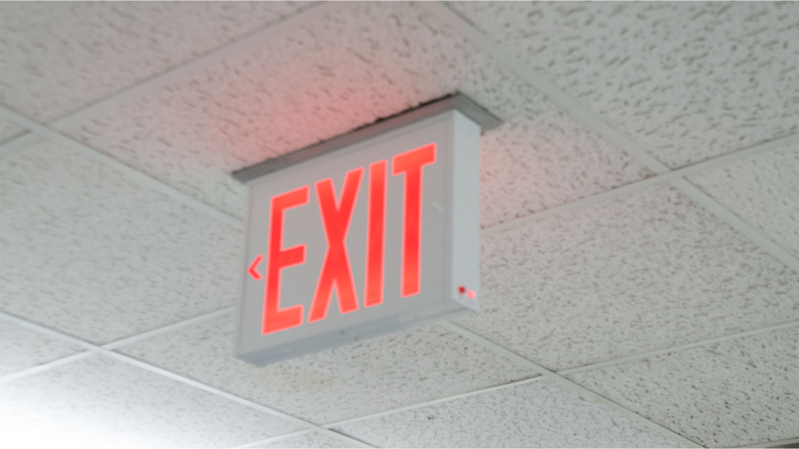
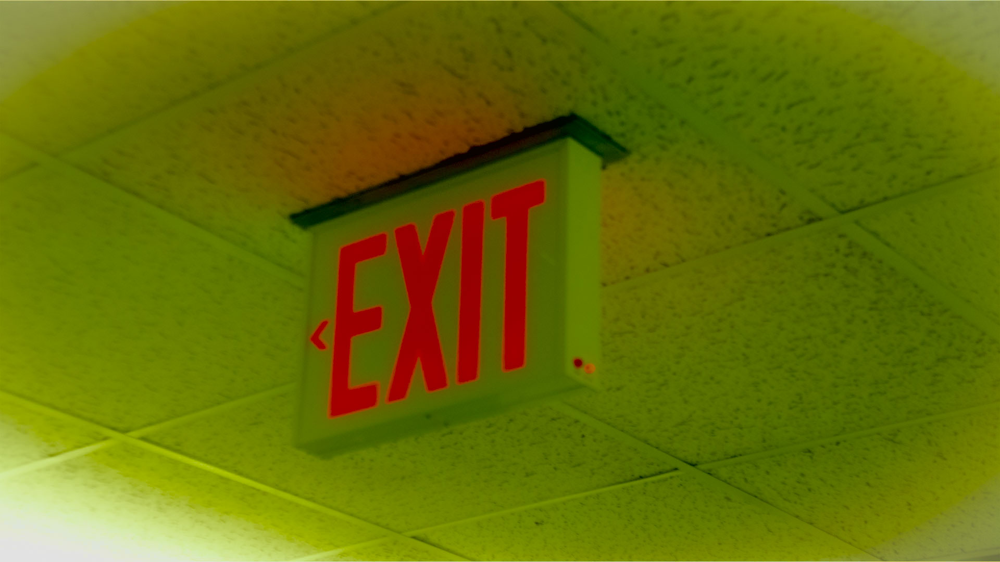

| Before | After |
|---|---|
|
 Before — underexposed; clipping visible |
 After — exposure balanced; straightened |
These two images show the effect of using Photoshop’s Camera Raw Filter. The “before” photo is unedited, while the “after” version has adjustments in exposure, contrast, and color balance. The changes make the image feel more polished and professional.